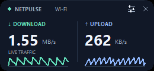
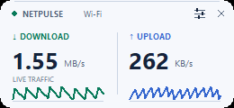

A clear view of traffic.
Download and upload rates from Windows’ native network counters, measured over real elapsed time. Choose bits or bytes and the refresh interval that suits you.
Native counters. No test downloads.A little clarity for your Windows desktop
Live download and upload rates, in a widget that stays out of your way. Small on your screen. Styled your way.
JUST THE SIGNAL
Keep an eye on a download, a file sync, or a quiet connection. No dashboard to keep open.
Download and upload rates from Windows’ native network counters, measured over real elapsed time. Choose bits or bytes and the refresh interval that suits you.
Native counters. No test downloads.Mini mode fits both readings into a 226 × 38 logical-pixel strip. Drag it to a quiet corner, keep it on top, and get back to what you were doing.
Two readings. No title bar.Pick a theme, an accent, and a corner radius. Adjust transparency or add activity graphs in a larger layout. Your preferences stay saved on your computer.
A quick right-click makes it yours.YOUR DESKTOP, YOUR DETAILS
Midnight, Daylight, or a theme that follows Windows. Go minimal, or give your connection a little more room.


Actual app screenshots · sample traffic values
A SMALL START
Free to use. Open to explore. Get started with the Python source on Windows.
Download sourceSource ZIP · Python 3.10+ with Tcl/Tk required
Check GitHub ReleasesPackaged Windows builds have not been published yet.
Install Python 3.10 or newer for Windows, with Tcl/Tk included. NetPulse needs no additional runtime packages.
Get Python for Windows ↗Extract the source ZIP, open a terminal in the extracted NetPulse folder, and run:
python source/app.py
Drag the widget into place. Right-click → Customize to choose Mini mode, adjust the look, or select an adapter.
A LITTLE MORE CLARITY
NetPulse shows the traffic currently passing through your network adapter. It doesn’t test the maximum speed of your internet plan. Local-network transfers and protocol overhead can be included, and an idle connection can show zero.
Automatic selection uses connected physical adapters and excludes virtual and VPN layers to reduce double counting. You can select an individual adapter in Customize, including when running in a virtual machine.
The app has no account, telemetry, advertising, or remote service.
It reads local Windows counters. Your preferences are stored
locally in %LOCALAPPDATA%\NetPulse\settings.json.
Yes. NetPulse is MIT licensed and built with Python and Tkinter. Explore the source on GitHub or read the contribution guide to get started.
NetPulse targets Windows 10 and 11, 64-bit. It has been tested on Windows 11. Windows 10 and mixed-DPI monitor setups have not been physically validated. See the validation notes for details.